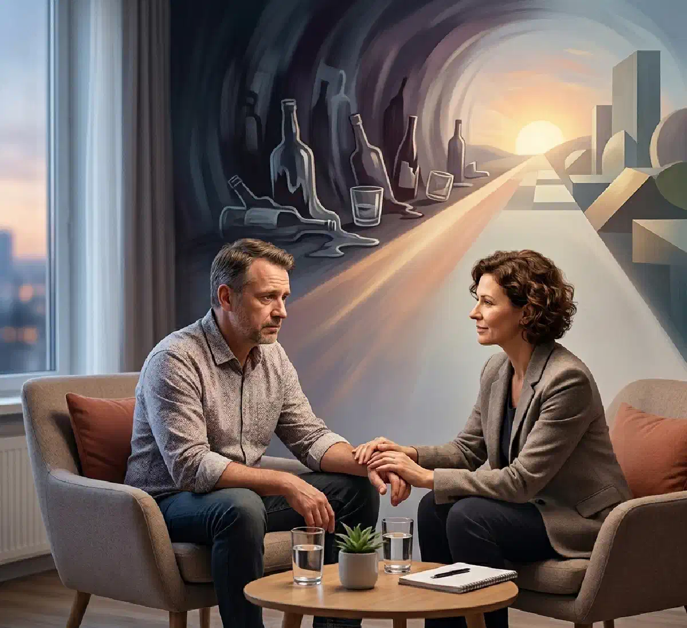

+38(068) 79 72 782
+38(068) 79 72 782Психотерапія при алкогольної залежності
Ключ до життя без залежності


Безкоштовна консультація, працюємо цілодобово 24/7
Ключ до життя без залежності

Дата написання: 28 квіт. 2026 р.
Останнє оновлення: 28 квіт. 2026 р.
Психотерапія при алкогольній залежності — це ключовий і незамінний етап лікування, спрямований на усунення психологічних причин вживання та формування стійкої тверезості. На відміну від детоксикації та медикаментозної терапії, які в першу чергу впливають на фізичний стан організму, психотерапія працює з мисленням, емоціями, поведінковими установками та внутрішніми конфліктами людини. Саме цей етап дозволяє не просто тимчасово відмовитися від алкоголю, а закріпити результат лікування і значно знизити ризик зривів у довгостроковій перспективі.
Алкогольна залежність формується не лише як звичка, але й як спосіб уникнення стресів, тривожних станів, психологічного напруження та невирішених внутрішніх проблем. Для багатьох пацієнтів вживання стає своєрідним механізмом «саморегуляції», що дозволяє тимчасово знизити емоційний дискомфорт. Однак з часом це призводить до формування стійкої залежності, за якої людина втрачає здатність справлятися з труднощами без алкоголю. Саме тому без глибокої психологічної роботи досягти стабільного і тривалого результату вкрай складно. Психотерапія допомагає виявити справжні причини залежності, змінити деструктивні моделі мислення і поведінки, а також сформувати нові навички реагування на стресові ситуації.
Психотерапія допомагає пацієнту не просто усвідомити факт залежності, а глибоко зрозуміти її природу та механізми формування тяги до алкоголю. Замість автоматичної реакції «випити при стресі» людина починає відстежувати свої думки, емоції та внутрішні стани, які запускають бажання вживання. Це перший і один із найважливіших кроків — перехід від неусвідомленої поведінки до контролю над своїми діями.
У процесі терапевтичної роботи пацієнт опановує практичні інструменти саморегуляції: техніки управління стресом, емоційної стабілізації, переключення уваги та роботи з нав’язливими думками. Він вчиться розпізнавати тригери — ситуації, почуття або обставини, які раніше провокували вживання, — і реагувати на них по-новому, без алкоголю. Поступово формуються більш здорові та стійкі моделі поведінки, які замінюють деструктивні звички.
З часом інтенсивність тяги до алкоголю помітно знижується, а епізоди бажання випити стають більш контрольованими. У пацієнта формується впевненість у своїх силах, з’являється відчуття внутрішнього контролю і розуміння, що він здатний справлятися з життєвими труднощами без вживання. Це створює міцну основу для тривалої тверезості та стійкого відновлення.
Психолог відіграє ключову роль у процесі лікування алкогольної залежності, оскільки саме він допомагає пацієнту розібратися в глибинних причинах вживання та змінити звичні моделі мислення і поведінки. Залежність рідко виникає «сама по собі» — за нею часто стоять стрес, тривожні стани, травматичний досвід або внутрішні конфлікти. Завдання спеціаліста — м’яко і професійно виявити ці фактори та допомогти людині знайти здорові способи їх проживання.
Важливою частиною роботи є створення безпечного і довірчого простору, де пацієнт може відкрито говорити про свої переживання без страху осуду чи тиску. Це дозволяє знизити внутрішню напругу, краще зрозуміти себе і поступово змінити ставлення до проблеми. У ході терапії людина вчиться усвідомлювати свої емоції, приймати їх і керувати ними без необхідності «заглушати» алкоголем.
Робота з психологом допомагає значно знизити рівень тривожності, пропрацювати внутрішні конфлікти, підвищити самооцінку та сформувати більш стійку емоційну стабільність. Це особливо важливо, оскільки для багатьох пацієнтів алкоголь стає способом уникнення неприємних почуттів, таких як страх, самотність або напруження. Постійна підтримка спеціаліста протягом лікування відіграє вирішальну роль у закріпленні результату.
Сучасна психотерапія пропонує широкий спектр методів лікування алкогольної залежності, які підбираються індивідуально з урахуванням стану пацієнта, стадії залежності, особистісних особливостей і супутніх проблем. До найбільш ефективних підходів належать когнітивно-поведінкова терапія, мотиваційне консультування, психоаналіз, гештальт-терапія та ряд інших напрямків, кожен з яких вирішує певні завдання в процесі відновлення.
Кожен метод спрямований на пропрацювання конкретних аспектів залежності. Одні допомагають змінити деструктивні думки і установки, пов’язані з алкоголем, інші — глибше зрозуміти і прожити пригнічені емоції, треті — сформувати нові поведінкові моделі та навички, необхідні для тверезого життя. Наприклад, когнітивно-поведінкова терапія вчить розпізнавати і коригувати автоматичні думки, мотиваційне консультування посилює внутрішню готовність до змін, а більш глибокі підходи дозволяють працювати з внутрішніми конфліктами та особистісними особливостями. Особливе значення має комплексне використання кількох методів. Такий підхід дозволяє охопити проблему з різних сторін: не лише знизити тягу до алкоголю, але й усунути її першопричини, зміцнити емоційну стійкість і сформувати нові життєві стратегії. У результаті пацієнт отримує не тимчасове полегшення, а більш глибокий і стійкий результат, який стає основою для тривалої тверезості та повноцінного відновлення.
Перед початком психотерапії вкрай важливо стабілізувати фізичний стан пацієнта, оскільки повноцінна робота з психологом неможлива при вираженій інтоксикації або абстинентному синдромі. За наявності запою, сильної слабкості, тривожності, порушень сну та інших проявів алкогольної інтоксикації в першу чергу проводиться детоксикація. Цей етап спрямований на очищення організму від токсинів, відновлення водно-електролітного балансу та нормалізацію роботи внутрішніх органів — серця, печінки, нервової системи. Детоксикація проводиться під контролем лікаря-нарколога і може включати інфузійну терапію (крапельниці), медикаментозну підтримку та контроль життєво важливих показників. Такий підхід дозволяє не лише покращити загальне самопочуття пацієнта, але й запобігти розвитку ускладнень, які часто виникають на фоні тривалого вживання алкоголю.
Наркологічна допомога з проведенням детоксикації доступна в таких містах, як (Київ | Харків | Одеса | Дніпро | Львів | Запоріжжя | Черкаси) та інших населених пунктах. Можливий як стаціонарний формат лікування, так і виїзд лікаря додому, що дозволяє розпочати допомогу максимально швидко і в комфортних умовах для пацієнта.
Стабілізація фізичного стану є обов’язковим етапом перед початком психотерапії, оскільки в стані абстиненції або сильної інтоксикації у людини знижується концентрація уваги, погіршується сприйняття інформації і порушується емоційний фон. У таких умовах психотерапевтична робота стає малоефективною, а інколи й неможливою. Після проведення детоксикації та відновлення організму пацієнт стає більш сприйнятливим до психологічної допомоги. У нього з’являється можливість усвідомлено включатися в терапевтичний процес, аналізувати свій стан, працювати з причинами залежності та формувати нові поведінкові моделі.
Індивідуальна психотерапія дозволяє максимально глибоко і детально пропрацювати особисті причини формування алкогольної залежності, оскільки вся робота вибудовується з урахуванням особливостей конкретного пацієнта. У ході таких сесій спеціаліст аналізує життєвий досвід людини, її емоційний стан, звичні моделі поведінки і мислення, а також поточні труднощі, з якими вона стикається. Такий формат створює умови для максимально точної та ефективної роботи з проблемою.
Особлива увага приділяється виявленню тригерів — ситуацій, емоцій і внутрішніх станів, які провокують бажання вживання алкоголю. У процесі терапії пацієнт вчиться розпізнавати ці моменти на ранньому етапі і реагувати на них більш усвідомлено. Додатково проводиться робота з травматичним досвідом, внутрішніми конфліктами, почуттям провини, тривогою або невпевненістю, які часто лежать в основі залежності.
Індивідуальна психотерапія також спрямована на формування нових стратегій поведінки та стійких навичок саморегуляції. Пацієнт опановує способи справлятися зі стресом, напруженням і емоційними перевантаженнями без використання алкоголю. Поступово формується більш стабільний внутрішній стан, підвищується самооцінка і впевненість у власних силах. Саме індивідуальний підхід робить терапію максимально ефективною, оскільки дозволяє враховувати всі нюанси стану пацієнта і адаптувати методи роботи під його потреби.
Групова терапія є важливим і ефективним доповненням до індивідуальної роботи, оскільки дозволяє пацієнту вийти зі стану ізоляції і відчути підтримку людей із подібним досвідом. Однією з ключових проблем при алкогольній залежності є відчуття самотності, нерозуміння і внутрішнього сорому, які посилюють замкнутість і заважають звернутися за допомогою. У групі формується безпечний простір, де учасники можуть відкрито ділитися своїми переживаннями і отримувати відгук без осуду.
Особливу цінність становить обмін досвідом між учасниками. Пацієнти починають бачити свою ситуацію з боку, дізнаються, як інші справляються з тягою до алкоголю, які труднощі виникають на шляху до тверезості і які рішення виявляються ефективними. Це допомагає не лише отримати нові практичні інструменти для боротьби із залежністю, але й зміцнити мотивацію, оскільки людина бачить реальні приклади відновлення. Групова динаміка підсилює терапевтичний ефект за рахунок взаємодії між учасниками. Формується відчуття приналежності, взаємної підтримки і відповідальності, що позитивно впливає на емоційний стан і знижує ризик зривів. Учасники вчаться вибудовувати здорове спілкування, виражати свої почуття і приймати зворотний зв’язок, що є важливою частиною відновлення.
Когнітивно-поведінкова терапія (КПТ) вважається одним із найбільш ефективних і науково обґрунтованих методів лікування алкогольної залежності. Її основна мета — змінити стійкі негативні мисленнєві установки і поведінкові шаблони, які формують і підтримують тягу до алкоголю. У рамках цього підходу розглядається взаємозв’язок між думками, емоціями і діями, що дозволяє впливати на залежність системно і послідовно.
У процесі терапії пацієнт вчиться розпізнавати автоматичні думки — ті внутрішні установки, які виникають спонтанно і часто непомітно підштовхують до вживання. Це можуть бути переконання на кшталт «я не впораюся без алкоголю», «мені потрібно розслабитися будь-якою ціною» або «один раз нічого не змінить». Під керівництвом спеціаліста людина починає аналізувати ці думки, піддавати їх критичній оцінці і замінювати більш реалістичними та конструктивними. Така навичка дозволяє змінити реакцію на стресові ситуації і значно знизити ймовірність зривів.
КПТ також включає навчання практичним навичкам: управлінню стресом, контролю імпульсів, роботі з тривожністю, плануванню поведінки в складних ситуаціях і запобіганню рецидивам. Пацієнт отримує конкретні інструменти, які можна застосовувати у повсякденному житті — від технік «зупинки думки» до покрокових стратегій виходу з тригерних ситуацій. Завдяки своїй структурованості та орієнтованості на результат когнітивно-поведінкова терапія дозволяє не лише тимчасово знизити тягу до алкоголю, але й сформувати стійкі навички самоконтролю. Це робить її важливою частиною комплексного лікування і надійною основою для тривалої тверезості.
Психотерапія дозволяє виявити не лише очевидні, але й глибинні причини формування алкогольної залежності, які часто залишаються прихованими для самого пацієнта. До таких факторів можуть належати хронічний стрес, психологічні травми, проблеми у відносинах, відчуття самотності, низька самооцінка, внутрішні конфлікти або емоційна нестабільність. У багатьох випадках алкоголь стає способом тимчасово впоратися з цими станами, створюючи ілюзію полегшення, але з часом лише погіршуючи проблему.
Без опрацювання цих причин ризик повернення до вживання залишається високим, навіть якщо фізична залежність уже усунена. Людина може знову зіткнутися зі звичними емоційними труднощами і, не маючи інших інструментів, повернутися до попереднього способу «вирішення» проблеми. Саме тому психотерапія спрямована не лише на відмову від алкоголю, але й на зміну внутрішнього стану пацієнта. У процесі роботи спеціаліст допомагає пацієнту усвідомити свої почуття, розібратися в причинах їх виникнення і навчитися проживати їх екологічно, без придушення і втечі в залежність. Поступово формуються нові способи реагування на стрес, покращується емоційна стійкість і з’являється здатність справлятися з життєвими труднощами без алкоголю.
Після відмови від алкоголю пацієнт нерідко стикається з вираженими емоційними труднощами: тривожністю, дратівливістю, внутрішнім напруженням, апатією або перепадами настрою. Ці стани пов’язані з перебудовою нервової системи, яка тривалий час функціонувала під впливом алкоголю. Організм і психіка адаптуються до нових умов, а звичний спосіб зняття стресу зникає, що може викликати відчуття дискомфорту і нестабільності. Додатково можуть загострюватися раніше пригнічені емоції і переживання, які раніше «заглушалися» алкоголем. Людина починає стикатися з реальними почуттями — страхом, тривогою, почуттям провини або порожнечі — і без підтримки це може стати серйозним випробуванням. Саме в цей період особливо важливо не залишатися наодинці з цими станами.
Психотерапія допомагає м’яко і поступово відновити емоційний баланс. У процесі роботи пацієнт вчиться розпізнавати і приймати свої почуття, керувати ними без шкоди для себе та оточуючих, а також вибудовувати здорові реакції на стресові ситуації. Освоюються практичні навички саморегуляції, які замінюють попередні деструктивні способи зняття напруження.
З часом емоційний стан стабілізується, знижується рівень тривожності, покращується сон і загальне самопочуття. Людина починає відчувати більше контролю над своїм життям, підвищується впевненість у собі і формується стійка внутрішня рівновага. У результаті якість життя значно покращується, а тверезість стає не тимчасовим рішенням, а природною і комфортною нормою.
Без психотерапії лікування алкоголізму часто залишається неповним і дає лише тимчасовий результат. Усунення фізичних симптомів — зняття інтоксикації, відновлення роботи організму, нормалізація сну і загального стану — є важливим, але лише першим етапом. Ці заходи допомагають стабілізувати пацієнта, однак не зачіпають ключову проблему — психологічну залежність і причини, які призвели до формування тяги до алкоголю.
Якщо не пропрацювати внутрішні фактори, такі як стрес, тривожність, низька самооцінка, емоційні травми або деструктивні моделі поведінки, людина залишається вразливою перед звичними тригерами. Навіть після тривалого періоду тверезості може виникнути ситуація, в якій старі реакції повертаються, і ризик зриву залишається високим. У таких випадках відсутність психологічної підготовки і навичок саморегуляції значно ускладнює утримання результату. Психотерапія дозволяє не просто відмовитися від алкоголю, а змінити сам підхід до життя, навчитися справлятися з труднощами без вживання і вибудувати стійку внутрішню опору. У ході роботи формуються нові поведінкові стратегії, зміцнюється емоційна стабільність і знижується залежність від зовнішніх факторів.
Сім’я відіграє одну з ключових ролей у процесі відновлення від алкогольної залежності і багато в чому впливає на результат лікування. Підтримка близьких допомагає пацієнту відчувати, що він не один у боротьбі з проблемою, зберігати мотивацію і зміцнювати впевненість у власних силах. Саме сімейне середовище стає тим простором, у якому людина або закріплює нові, здорові звички, або, навпаки, стикається з факторами, що провокують зрив.
Особливе значення має емоційна атмосфера в сім’ї. Важливо створити спокійні, безпечні і підтримуючі умови без тиску, докорів і конфліктів. Надмірна критика, контроль або агресія можуть викликати у пацієнта захисну реакцію, посилювати стрес і підвищувати ризик повернення до вживання. Натомість розуміння, терпіння і поважне ставлення допомагають людині поступово адаптуватися до тверезого життя і відчувати підтримку на кожному етапі відновлення.
Активна участь сім’ї у процесі лікування значно підсилює ефект психотерапії. Близькі можуть допомагати дотримуватися рекомендацій спеціалістів, підтримувати режим, мотивувати на продовження терапії і вчасно помічати зміни у стані пацієнта. Крім того, важливим завданням є формування здорової комунікації всередині сім’ї — уміння відкрито обговорювати проблеми, висловлювати емоції і знаходити конструктивні рішення.
У ряді випадків рекомендується сімейна психотерапія, яка дозволяє пропрацювати накопичені конфлікти, відновити довіру і усунути фактори, що сприяють розвитку залежності. Такий формат допомагає не лише пацієнту, але й його близьким краще зрозуміти природу проблеми і навчитися взаємодіяти більш ефективно. У результаті створюється стійке підтримуюче середовище, яке значно підвищує шанси на тривалу тверезість і повноцінне відновлення.

Статтю перевірено експертом
Могучев Станіслав
Лікар-терапевт, ординатор
Можливо цікава стаття:
Янтарна кислота, Бетаргін та Ентеросгель при алкогольної інтоксикації

Так, ми суворо дотримуємося повної конфіденційності на всіх етапах лікування. Інформація про пацієнта, діагноз та проходження терапії не передається третім особам. Звернення до нас не тягне за собою постановку на облік. Ви можете бути впевнені у безпеці та анонімності.
Програма лікування розробляється індивідуально після консультації з фахівцем. Враховуються вид залежності, її тривалість, фізичний та психологічний стан пацієнта. Такий підхід дозволяє підвищити ефективність терапії та знизити ризик зриву. Ми не використовуємо шаблонні рішення.
Так, ми супроводжуємо пацієнтів і після основного курсу лікування. Проводяться консультації, рекомендації щодо адаптації та профілактики рецидивів. За потреби можлива подальша психологічна підтримка. Це допомагає зберегти результат та повернутися до повноцінного життя.
Номер телефону:
+380 (68) 797 27 82
+380 (50) 021 69 57
Адресу наркологічного центра вашого міста уточнюйте за
телефоном
Працюємо: Київ, Одеса, Львів, Харків, Дніпро, Запоріжжя,
Черкасах, Чугуєві, Чорноморську, Кам'янському
Telegram: t.me/umbrellaplus
Графік работы: Цілодобово